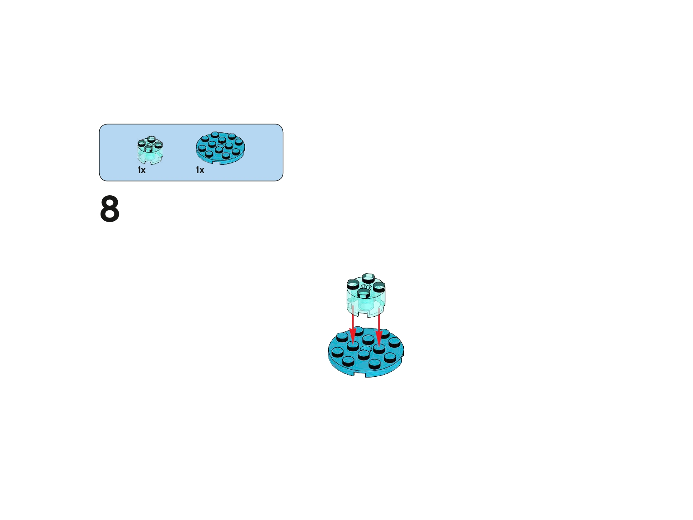

Planeta Zycurva · Uso del sensor de movimiento · Pensamiento matemático y computacional
RoverBot en Zycurva: Evita el Abismo
Diapositiva 1 de 10
Has llegado al Planeta Zycurva, una superficie inestable llena de grietas profundas y abismos energéticos.
Tu explorador, RoverBot, solo puede avanzar y retroceder en línea recta, pero un paso en falso puede hacerlo caer al vacío.
Tu misión es convertir el sensor de movimiento de RoverBot en su mejor aliado:
un sistema de alerta inteligente que le indique cuándo detenerse antes del borde.
Para lograrlo, tendrás que pensar como científico, programador y matemático al mismo tiempo.
Espacio para ilustración de portada (RoverBot frente al abismo en Zycurva).
1. Preparación en Zycurva
Antes de enviar a RoverBot hacia el borde, prepara el escenario de forma segura:
Marca una línea de inicio desde donde partirá RoverBot.
Delimita el “abismo” con cinta negra, cartulina oscura o el borde de la mesa (sin riesgo real).
Asegúrate de que RoverBot solo se mueva en línea recta: adelante y atrás.
Conecta el hub y verifica el funcionamiento del motor y del sensor de movimiento.
Asegúrate de tener la carpeta “Sensor” con las imágenes de construcción.
Abre el entorno de programación por bloques listo para programar.
2. Construcción del Sensor – Parte 1
Vas a construir el brazo con sensor de movimiento que permitirá a RoverBot detectar el borde del abismo.
Sigue los pasos en orden.
Paso 1
Paso 2
Paso 3
✔ Asegúrate de que las piezas encajen bien. El sensor debe ir firme para poder “ver” el peligro.
2. Construcción del Sensor – Parte 2
Continúa reforzando la estructura del brazo sensor. Observa cómo se asegura la base.
Paso 4
Paso 5
Paso 6
🔍 Revisa que el brazo quede estable y que el sensor no se mueva suelto.
2. Construcción del Sensor – Parte 3
Termina de armar el brazo. Aquí defines la posición donde el sensor mirará hacia adelante.
Paso 7

Paso 8
Paso 9
💡 Verifica que el sensor “apunte” hacia el frente, listo para detectar el borde.
2. Construcción del Sensor – Final
Añade las últimas piezas y conecta el sensor al hub. El sistema de seguridad de RoverBot está casi listo.
Si un robot no ve como nosotros, ¿cómo puede saber que está cerca de un lugar peligroso?
¿Qué pasaría si RoverBot no se detiene a tiempo antes del abismo?
¿Por qué los científicos necesitan medir con precisión para tomar decisiones seguras?
El sensor funciona como un “ojo científico” que envía información, y el programa será un
algoritmo: una lista ordenada de instrucciones que RoverBot debe seguir sin saltarse pasos.
💾 Tarea del equipo: escriban sus respuestas en un documento Word titulado
“M2_Zycurva_FaseExplorar_NombreEquipo” y guárdenlo en la carpeta de la misión en Drive.
Espacio para ilustración del equipo reflexionando sobre cómo ayudar a RoverBot.
4. Fase Crear: Algoritmo de Seguridad
Antes de programar con bloques, tu equipo escribe el pseudocódigo:
lo que quieren que haga RoverBot paso a paso.
RoverBot avanza desde la línea de inicio hacia el abismo.
El sensor de movimiento observa mientras se mueve.
Cuando detecta que está demasiado cerca del borde:
El motor se detiene.
RoverBot emite un sonido de alerta.
Retrocede durante un tiempo corto para ponerse a salvo.
Ejemplo de pseudocódigo:
AL INICIAR:
MIENTRAS RoverBot ESTÉ LEJOS DEL BORDE:
AVANZAR
LEER SENSOR
SI EL SENSOR DETECTA BORDE:
DETENER MOTOR
HACER SONIDO DE ALERTA
RETROCEDER 2 SEGUNDOS
✍️ Tarea: escriban su propio pseudocódigo en el mismo documento de la misión en Drive,
antes de pasar a la programación por bloques.
Espacio para diagrama de flujo o captura del pseudocódigo del equipo.
5. Registrar y Analizar: ¿Es un programa seguro?
Ahora deben comprobar con datos si el programa realmente protege a RoverBot:
Midan la distancia desde la línea de inicio hasta el abismo (ejemplo: 40 cm).
Ejecuten el programa varias veces.
En cada ensayo, midan a cuántos centímetros del borde se detuvo RoverBot.
Regístrenlo en la tabla y analicen los resultados.
Ensayo
Distancia al borde (cm)
Distancia donde se detuvo RoverBot (cm)
¿Se detuvo a tiempo?
1
2
3
4
Analicen si RoverBot siempre se detiene a una distancia segura.
Si en algún ensayo queda demasiado cerca del borde, ajusten el programa
y registren sus conclusiones en el documento de la misión en Drive.
Espacio para imagen o gráfica con los resultados de los ensayos.
6. Fase Compartir: Informe de la Misión
Graben un vídeo corto donde se vea a RoverBot acercándose al abismo y deteniéndose a tiempo.
En el vídeo, un integrante explica:
Cómo usa RoverBot el sensor de movimiento para evitar el abismo.
Qué instrucciones del algoritmo lo protegen.
Qué observaron en la tabla de datos y qué ajustes realizaron.
Suban el vídeo y el documento con respuestas, pseudocódigo y tabla a la carpeta de la misión en Drive.
Espacio para imagen del equipo presentando la misión completa.
✅ Cuando terminen todas las tareas, hagan clic en “Completar Misión” para ganar la
insignia "Guardianes del Abismo de Zycurva" y regresar al mapa de misiones.

 Paso 2
Paso 2
 Paso 3
Paso 3
 Paso 4
Paso 4
 Paso 5
Paso 5
 Paso 6
Paso 6
 Paso 7
Paso 7
 Paso 9
Paso 9